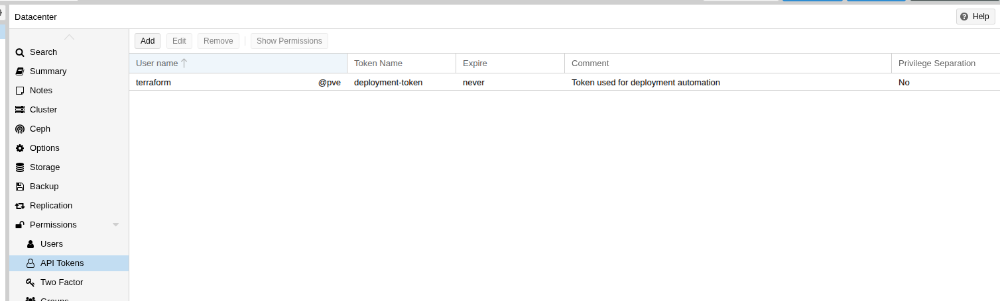
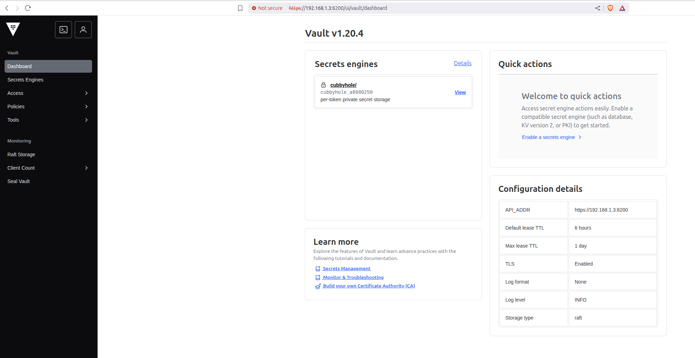
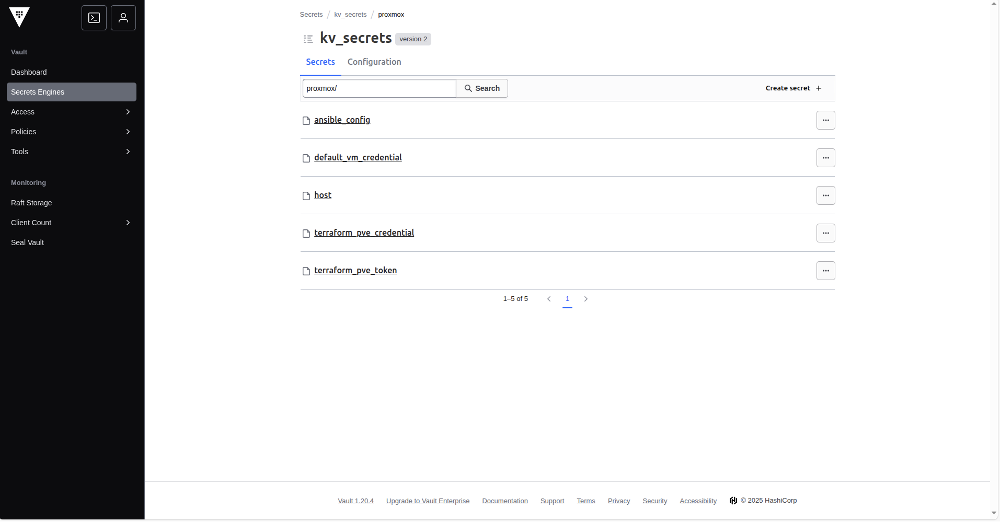

Proxmox Homelab Setup
This repository contains infrastructure-as-code for the automated deployment and configuration of a secure homelab environment on Proxmox, featuring HashiCorp Vault for secrets management and AWS integration for backend storage.
Disclaimer
This project is in development status and subject to breaking changes.
Please do not run any code on your machine without understanding the provisioning flow, in case of data loss. Some configurations may perform destructive actions that are irreversible!
Overview
This project provides a semi-automated approach to setting up a secure homelab infrastructure using modern DevOps practices:
- Packer creates base Proxmox VM templates from cloud images and ISOs
- Terraform provisions infrastructure components and manages Proxmox resources
- HashiCorp Vault provides secure secrets management with AWS KMS encryption
- AWS Integration for backend storage and encryption key management
The setup focuses on security, automation, and best practices for homelab environments.
Features
- Golden image creation with Packer for Ubuntu Server templates
- Declarative Proxmox infrastructure management with Terraform
- HashiCorp Vault deployment with AWS KMS encryption
- Secure secrets management and retrieval
- Proxmox user and role management
- Local storage configuration
- AWS S3 backend for Vault with KMS encryption
- Automated certificate management
- Infrastructure as Code best practices
Getting Started
This repository’s documentation is built with mdbook, a Rust-based documentation engine for simplicity and speed.
To start your journey, navigate to Getting Started and follow the instructions.
Folder Structure
.
├── docs/ # Documentation
├── images/ # Screenshots and diagrams
├── resources/
│ ├── aws/ # AWS infrastructure
│ │ └── 00_proxmox_backend/ # S3 and KMS for Terraform and HashicorpVault backend
│ └── proxmox/ # Proxmox infrastructure
│ ├── 00_proxmox_administration/ # Users, roles, storage
│ ├── 01_base_vm_template/ # Packer templates
│ └── 02_vault/ # Vault deployment
└── README.md
Acknowledgements
- kencx/homelab - Inspiration for HashiCorp stack architecture
- ChristianLempa/homelab - Proxmox automation patterns
Prerequisites
Hardware Requirements
This project can be run on any modern x86_64 system that meets the recommended system requirements of Proxmox. I recommend mini-SFF workstations such as those from Project TinyMiniMicro. Alternatively, you may choose to run the Proxmox cluster on your own PC for simple setup.
My Current Setup
| Component | Specification | Details |
|---|---|---|
| Proxmox Node | PC Gaming MS-7B19 | 1x Physical Server |
| CPU | Intel Core i5-8500 | 6 cores @ 3.00GHz, 1 socket, x86_64 |
| RAM | 16GB DDR4 | 2x 8GB modules |
| Storage | 1TB SSD | OS and VM storage |
| Network Switch | TP-Link 5 Port Gigabit | Network bridge configuration |
| WiFi Integration | TP-Link WiFi Adapter | Connected via bridge mode for wireless LAN |
| Proxmox Version | VE 8.4.1 | Current deployment version |
While a separate router and NAS is recommended, I run a virtualized instance of both within Proxmox itself.
Proxmox Node
A Proxmox Virtual Environment (PVE) server is required to host the virtual machines and containers. For detailed installation instructions, see the Proxmox Installation Guide.
Controller Node (Your Laptop)
A workstation/laptop/PC or separate host system will be used to run the required provisioning tools. This system will need to have the following tools installed:
| Tool | Purpose | Key Features | Installation Link |
|---|---|---|---|
| Packer | VM Image Building | • Automated VM template creation • Multi-platform support (VMware, VirtualBox, etc.) • Infrastructure as Code for images • Integration with cloud providers | Install Packer |
| Terraform | Infrastructure Provisioning | • Declarative infrastructure management • State management and tracking • Multi-cloud and on-premises support • Plan and apply workflow • Resource dependency management | Install Terraform |
| Mdbook | Documentation Generation | • Static site generation from Markdown • Built-in search functionality • Responsive design • Syntax highlighting • Table of contents generation | Install Mdbook |
Note: This documentation was tested with Packer v1.14.x and Terraform v1.13.x. While newer versions should work, please verify compatibility if you encounter any issues.
Cluster Requirements
- An existing Proxmox server that is reachable by the controller node
- (Optional) An offline, private root and intermediate CA.
- A self-signed certificate, private key for TLS encryption of Vault.
Proxmox Node Installation Guide
This guide will walk you through installing Proxmox Virtual Environment (PVE) on your hardware to create a Proxmox node for your homelab setup.
Prerequisites
Before starting the installation, ensure your hardware meets the Proxmox system requirements:
- CPU: 64-bit x86 processor with hardware virtualization support (Intel VT-x or AMD-V)
- RAM: Minimum 2GB, recommended 8GB or more
- Storage: Minimum 32GB for installation, recommended SSD for better performance
- Network: Ethernet connection for management interface
Download and Prepare Installation Media
-
Download Proxmox VE ISO
- Visit the Proxmox download page
- Download the latest Proxmox VE ISO image
- The ISO file is approximately 1.1GB
-
Create Bootable USB Drive
- Use tools like Rufus (Windows), Balena Etcher (cross-platform), or
ddcommand (Linux/macOS) - Write the ISO image to a USB flash drive (minimum 4GB capacity)
- Use tools like Rufus (Windows), Balena Etcher (cross-platform), or
Installation Process
Step 1: Boot from Installation Media
- Insert the bootable USB drive into your target hardware
- Power on the system and access the BIOS/UEFI settings
- Configure the boot order to prioritize USB devices
- Save settings and restart
- Select “Install Proxmox VE” from the boot menu
Step 2: Installation Wizard
- Welcome Screen: Press
Enterto start the installation - License Agreement: Accept the license terms
- Target Hard Disk:
- Select the disk where Proxmox will be installed
- ⚠️ Warning: This will erase all existing data on the selected disk
- Location and Time Zone: Configure your geographic location and timezone
- Administration Password: Set a strong password for the
rootuser - Network Configuration:
- Configure the management interface (usually the first Ethernet port)
- Set a static IP address or use DHCP
- Configure hostname (e.g.,
pve-node-01) - Set DNS servers
Step 3: Complete Installation
- Review your configuration settings
- Click “Install” to begin the installation process
- Wait for the installation to complete (typically 10-15 minutes)
- Reboot the system when prompted
- Remove the installation media
Post-Installation Configuration
Access the Web Interface
After installation, you can access the Proxmox web interface:
- Open a web browser and navigate to:
https://your-proxmox-ip:8006 - Accept the self-signed certificate warning (you can replace this with a proper certificate later)
- Login with:
- Username:
root - Password: The password you set during installation
- Realm:
pam(default)
- Username:

Initial System Configuration
-
Update the System:
apt update && apt upgrade -y -
Configure Storage:
- Navigate to Datacenter → Storage
- Add additional storage pools if needed (local, NFS, iSCSI, etc.)
-
Network Configuration:
- Verify network settings in System → Network
- Configure additional network interfaces if required
-
Subscription Management:
- For production use, consider purchasing a Proxmox subscription
- For homelab use, you can use the free community repository
Verify Installation
Check that your Proxmox node is properly configured:
- System Information: Verify CPU, RAM, and storage are detected correctly
- Network Connectivity: Ensure the management interface is accessible
- Storage: Confirm local storage is available and properly configured
- Updates: Check that the system can access Proxmox repositories
Next Steps
With your Proxmox node successfully installed, you can now:
- Create Virtual Machines: Use the web interface to create your first VMs
- Set up Containers: Deploy lightweight LXC containers
- Configure Backup: Set up automated backups for your VMs and containers
- Join a Cluster: Add additional nodes to create a high-availability cluster
- Deploy Infrastructure: Use the Terraform configurations in this repository to automate your homelab setup
Troubleshooting
Common Issues
- Network not accessible: Check firewall settings and network configuration
- Storage not detected: Verify disk connections and check for hardware issues
- Web interface not loading: Ensure the
pveproxyservice is running - Certificate warnings: This is normal for self-signed certificates; you can replace them later
Useful Commands
# Check system status
systemctl status pve-cluster
# View system logs
journalctl -u pve-cluster
# Restart Proxmox services
systemctl restart pve-cluster
# Check storage
pvesm status
Security Considerations
- Change default passwords: Use strong, unique passwords
- Configure firewall: Restrict access to management interfaces
- Regular updates: Keep the system updated with security patches
- Backup configuration: Regularly backup your Proxmox configuration
- Network isolation: Consider isolating management traffic from VM traffic
For more detailed information, refer to the official Proxmox documentation.
Getting Started
This guide provides the complete deployment sequence for a secure homelab environment on Proxmox with HashiCorp Vault and AWS integration.
Prerequisites
Ensure all prerequisites are met before proceeding.
Quick Reference
| Step | Component | Purpose |
|---|---|---|
| 1 | Trusted CA Store Configuration | Certificate trust configuration |
| 2 | AWS Backend | S3 storage and KMS encryption |
| 3 | Proxmox Admin | Users, roles, and storage setup |
| 4 | VM Templates | Base images for deployment |
| 5 | Vault Server | Secrets management infrastructure |
Follow each step sequentially for a complete homelab deployment.
Deployment Sequence
1. Trusted CA Store Configuration
Configure the controller node to trust Proxmox certificates for secure Terraform operations.
Guidelines: Trusted CA Store Configuration
2. AWS Backend Infrastructure
Deploy AWS S3 and KMS infrastructure for secure state storage and encryption.
Guidelines: AWS Configuration
3. Proxmox Administration
Configure Proxmox users, roles, and storage for automation.
Guidelines: Proxmox Setup
4. VM Template Creation
Build base VM templates using Packer for consistent deployments.
Guidelines: Base VM Templates
5. Vault Infrastructure
Deploy and configure HashiCorp Vault with AWS KMS encryption.
Guidelines: HashiCorp Vault
Trusted CA Store Configuration
This guide explains how to configure the controller node to trust Proxmox’s self-signed certificate, which is essential for secure Terraform operations.
Overview
Proxmox VE uses self-signed certificates by default, which causes TLS verification errors when Terraform attempts to connect to the Proxmox API. This configuration adds the Proxmox certificate to the system’s trusted CA store, enabling secure communication.
Prerequisites
- Controller node running Ubuntu Server
- Network access to your Proxmox server
opensslpackage installed (usually pre-installed on Ubuntu)- Root or sudo privileges
Configuration Steps
Step 1: Set Proxmox Server IP
First, export your Proxmox server IP address as an environment variable:
export PROXMOX_IP="<PROXMOX_IP>"
Replace <PROXMOX_IP> with your actual Proxmox server IP address.
Example:
export PROXMOX_IP="192.168.1.100"
Step 2: Download the Proxmox Certificate
Download the Proxmox server’s certificate to your controller node:
echo | \
openssl s_client -connect ${PROXMOX_IP}:8006 -showcerts 2>/dev/null | \
openssl x509 -outform PEM > proxmox.crt
Step 3: Add Certificate to System CA Store
Copy the certificate to the system’s trusted CA certificates directory:
sudo cp proxmox.crt /usr/local/share/ca-certificates/proxmox.crt
Step 4: Update Trusted CA Certificates
Update the system’s trusted CA certificates:
sudo update-ca-certificates
You should see output similar to:
Updating certificates in /etc/ssl/certs...
1 added, 0 removed; done.
Running hooks in /etc/ca-certificates/update.d...
Step 5: Verify Certificate Installation
Verify the certificate was successfully added:
ls -la /usr/local/share/ca-certificates/proxmox.crt
The file should exist and be readable.
Step 6: Clean Up
Remove the temporary certificate file:
rm proxmox.crt
Verification
To verify that the certificate is properly trusted, you can test the connection:
curl -I https://${PROXMOX_IP}:8006/api2/json/version
This should return a successful HTTP response without certificate errors.
Alternative Configuration (Less Secure)
If you prefer not to trust the certificate system-wide, you can configure Terraform to skip certificate verification by setting insecure = true in your Proxmox provider configuration:
provider "proxmox" {
endpoint = "your endpoint"
username = "your username"
password = var.user_terraform_password
insecure = true
}
⚠️ Security Warning: Using insecure = true bypasses certificate verification and makes your connection vulnerable to man-in-the-middle attacks. The trusted CA store method is recommended for production environments.
Security Considerations
- The certificate is added to the system-wide trusted CA store, affecting all applications on the controller node
- This is the recommended approach for production environments
- Consider certificate rotation if your Proxmox server’s certificate changes
- Monitor for any security updates related to certificate handling
AWS Backend Configuration
Overview
This section covers the AWS backend configuration required for our Proxmox homelab infrastructure. The AWS backend provides secure, scalable storage and encryption services that are essential for managing our infrastructure state and sensitive data.
Why AWS Backend is Essential
Before deploying our Proxmox homelab infrastructure, we need to establish a secure AWS backend for several critical reasons:
Enhanced Security
- Encrypted State Storage: Terraform state files contain sensitive information including resource IDs, IP addresses, and configuration details. AWS S3 with server-side encryption ensures these secrets are protected at rest.
- KMS Key Management: AWS KMS provides centralized key management with automatic rotation, audit logging, and fine-grained access controls for encrypting/decrypting sensitive data.
- Access Control: IAM policies ensure only authorized users can access the backend resources, preventing unauthorized infrastructure modifications.
Operational Benefits
- Remote State Management: Multiple team members can collaborate on infrastructure changes with consistent state locking.
- Backup and Recovery: Automated backups and point-in-time recovery capabilities for both Terraform state and Vault data.
- Cost Optimization: Pay-as-you-use model with lifecycle policies to automatically transition data to cheaper storage classes.
Components
The AWS backend for this project is split into two modules:
- S3 Backend: Remote Terraform state storage
- KMS Backend: Encryption key management (auto-unseal, storage encryption)
Use the S3 module first to create the remote state bucket, then configure the KMS module to use that bucket via backend.config.
AWS Authentication
Authenticate with AWS using one of the following methods:
# Environment variables (recommended)
export AWS_ACCESS_KEY_ID="<access-key-id>"
export AWS_SECRET_ACCESS_KEY="<secret-access-key>"
export AWS_DEFAULT_REGION="us-east-1"
# ~/.aws/credentials (credentials file)
[default]
aws_access_key_id = <access-key-id>
aws_secret_access_key = <secret-access-key>
region = us-east-1
# AWS named profile (example)
aws configure --profile proxmox-backend
export AWS_PROFILE=proxmox-backend
Verify credentials:
aws sts get-caller-identity
S3 Backend (Terraform State Storage)
This module provisions the S3 bucket used as the remote backend for Terraform state across the project.
Prerequisites
- An AWS account with permissions to create S3 buckets.
- AWS authentication configured (see “AWS Backend Configuration” page for methods and verification).
Configuration
Module Location
resources/aws/00_tf_s3_backend
Configure Variables
Copy and edit variables:
cd resources/aws/00_tf_s3_backend
cp terraform.tfvars.example terraform.tfvars
Set the following in terraform.tfvars:
| Field | Type | Description | Example |
|---|---|---|---|
aws_region | string | AWS region for resources | “us-east-1” |
s3_bucket_name | string | Name of the S3 bucket for Terraform backend | “terraform-backend-proxmox” |
admin_users | list(string) | IAM principal ARNs with admin access to the S3 bucket | [“arn:aws:iam:: |
standard_users | list(string) | IAM principal ARNs with standard access to the S3 bucket | [“arn:aws:iam:: |
The lists admin_users and standard_users must each contain at least one ARN.
Deploy
terraform init
terraform plan
terraform apply
Outputs
s3_bucket_name: The name of the S3 bucket for Terraform backends3_bucket_arn: The ARN of the S3 bucket for Terraform backends3_bucket_domain_name: The bucket domain name for Terraform backend
Use This Bucket as Remote Backend
Other modules (for example resources/aws/01_kms) read backend settings from a backend.config file. After the bucket is created, set its name in that file:
# resources/aws/01_kms/backend.config
bucket = "<your-created-bucket-name>"
region = "<your-region>"
Then initialize the downstream module with:
terraform init -backend-config=backend.config
Cleanup
To remove the backend bucket, ensure it is empty first (Terraform state files are stored here). Then:
terraform destroy
KMS Backend (Encryption Key Management)
This module provisions an AWS KMS key and alias for encrypting sensitive data, such as Vault storage and other AWS services.
Prerequisites
- S3 backend bucket created and available (see S3 Backend page).
- AWS authentication configured (see “AWS Configuration” page for methods and verification).
Configuration
Module Location
resources/aws/01_kms
Configure Backend
Copy the example backend config, then edit it:
cp backend.config.example backend.config
Update backend.config to point to your S3 state bucket:
bucket = "<your-created-bucket-name>"
region = "<your-region>"
Initialize with:
terraform init -backend-config=backend.config
Configure Variables
Copy and edit variables:
cp terraform.tfvars.example terraform.tfvars
Set the following in terraform.tfvars:
| Field | Type | Description | Example |
|---|---|---|---|
kms_alias_name | string | Alias name for the KMS key | “vault-backend” |
kms_key_description | string | Description for the KMS key | “KMS key for Vault backend encryption” |
kms_key_deletion_window | number | Deletion window in days (7-30) | 30 |
kms_key_rotation | bool | Enable automatic key rotation | true |
admin_users | list(string) | IAM ARNs with full KMS permissions | [“arn:aws:iam:: |
standard_users | list(string) | IAM ARNs with encrypt/decrypt permissions | [“arn:aws:iam:: |
Validation rules enforce at least one admin and one standard user and that deletion window is between 7 and 30.
Deploy
terraform plan
terraform apply
Outputs
kms_key_id: The globally unique identifier for the KMS keykms_key_arn: The Amazon Resource Name (ARN) of the KMS keykms_key_alias_name: The display name of the KMS key aliaskms_key_alias_arn: The Amazon Resource Name (ARN) of the KMS key aliaskms_key_rotation_enabled: Whether automatic key rotation is enabledkms_key_deletion_window: The deletion window in days
Integration Examples
- Use for S3 bucket default encryption.
- Use as the KMS key for Vault storage auto-unseal and Transit engine.
- Use with EBS, RDS, and other AWS services requiring KMS.
Cleanup
terraform destroy
Note: KMS keys observe the configured deletion window and are not deleted immediately.
Proxmox Setup
This section covers the essential Proxmox configuration and VM template setup for your homelab infrastructure.
Users and Roles
Create dedicated automation users and custom roles for Terraform and Packer operations with appropriate permissions.
Local Storage
Configure local storage for ISO images and container templates with automated downloads.
Base VM Templates
Pre-configured VM templates for rapid deployment with cloud-init integration.
Proxmox Users and Roles Configuration
This configuration creates dedicated automation users and custom roles for Terraform and Packer operations on your Proxmox server. These components are essential for infrastructure automation and must be configured with appropriate permissions.
Prerequisites
- Proxmox server is running and accessible
- Terraform provider for Proxmox is configured
- Administrative access to Proxmox server
- Network connectivity between controller node and Proxmox server
Configuration
Module Location
resources/proxmox/00_proxmox_administration/00_users_and_roles
Configure Backend
Copy the example backend config, then edit it to point to your S3 state bucket:
cp backend.config.example backend.config
bucket = "your-actual-s3-bucket-name"
region = "us-east-1"
Deploy
terraform init -backend-config=backend.config
terraform plan
terraform apply
Configure Variables
The following variables will be prompted during deployment:
| Variable | Type | Description | Default | Required |
|---|---|---|---|---|
proxmox_endpoint | string | The URL of the Proxmox endpoint (Format: https://proxmox-host-ip:8006) | Yes | |
s3_bucket | string | Name of the S3 bucket used as Terraform backend | - | Yes |
virtual_environment_username | string | Username (with realm) for Proxmox authentication | - | Yes |
virtual_environment_password | string | Password for Proxmox authentication | - | Yes |
user_initial_password | string | Initial password for created users | - | Yes |
Created Users
Terraform PVE User (terraform@pve)
Purpose: Primary automation user for Terraform operations
Permissions:
- VM Management: Full administrative access to
/vmspath withPVEVMAdminrole - Storage Management: Administrative access to
/storagepath withPVEDatastoreAdminrole - SDN Management: Administrative access to
/sdnpath withPVESDNAdminrole - System Audit: System modification and audit permissions with
SysModifyAuditrole
Groups: Standard
Created Roles
SysModifyAudit Role
Role ID: SysModifyAudit
Purpose: Provides system modification and audit capabilities for automation users
Privileges:
- Sys.Audit: System audit permissions for monitoring and logging
- Sys.Modify: System modification permissions for infrastructure changes
Usage: This role is assigned to the terraform@pve user to provide necessary permissions for:
- System configuration changes
- Audit trail maintenance
- Infrastructure monitoring
- Automated system modifications
Post-deployment
Generate API Token
After the users and roles are created, you need to generate API tokens for the automation users to use with Terraform and Packer.
For Terraform User (terraform@pve)
-
Access Proxmox Web Interface
- Navigate to your Proxmox server web interface (typically
https://your-proxmox-ip:8006) - Log in with your administrative credentials
- Navigate to your Proxmox server web interface (typically
-
Navigate to User Management
- Go to Datacenter → Permissions → API Tokens
- Click on
Add
-
Token Configuration
- Configure the token:
- User: Choose
terraform@pve - Token ID:
deployment-token(or your preferred name) - Privilege Separation: Leave unchecked (token inherits user permissions)
- Expiration: Set according to your security policy (optional)
- Comment: Input your comment here (optional)
- User: Choose
- Click “Generate”
- Configure the token:
-
Save Token Credentials
- Important: Copy and securely store the generated token
- The token will be displayed as:
terraform@pve!terraform-token=xxxxxxxx-xxxx-xxxx-xxxx-xxxxxxxxxxxx - This token will be used in your Terraform provider configuration

Proxmox Local Storage Configuration
This configuration sets up local storage for ISO images and container templates on your Proxmox server. It includes automated downloads of Ubuntu server images and Debian container templates, providing the foundation for VM and container creation.
Prerequisites
- Proxmox server is running and accessible
- Terraform provider for Proxmox is configured
- Administrative access to Proxmox server
- Users and roles configuration completed (see Users and Roles)
- Sufficient disk space for ISO images and templates
- Network connectivity for downloading images
Important: Ensure you have completed the Users and Roles configuration before proceeding with local storage setup. The terraform user created in the previous steps will be used for automated operations.
Configuration
Module Location
resources/proxmox/00_proxmox_administration/01_local_storage
Configure Backend
Copy the backend configuration example and update the values:
cp backend.config.example backend.config
Edit backend.config and update the S3 bucket name:
bucket = "your-actual-s3-bucket-name"
region = "us-east-1"
Configure Variables
The following variables will be prompted during deployment:
| Variable | Type | Description | Default | Required |
|---|---|---|---|---|
proxmox_endpoint | string | The URL of the Proxmox endpoint | "https://192.168.1.100:8006" | No |
user_terraform_password | string | Password for terraform user authentication | - | Yes |
node_name | string | Node name to deploy resources | "pve" | No |
data_store_id | string | Data store ID for storage | "local" | No |
Deploy
terraform init -backend-config="./backend.config"
terraform plan
terraform apply
Note: From this step, use the
terraform@pveuser for automation instead of the standard user. This user has the necessary permissions for automated operations and follows security best practices.
Storage Configuration
Local Storage Setup
Storage ID: local (default)
Node: pve (default)
Type: Local storage for ISOs and templates
Storage Requirements
Minimum Space Requirements:
- Ubuntu ISO: ~1.5 GB
- Debian Template: ~200 MB
- Total: ~2 GB minimum
Recommended Space:
- Minimum: 5 GB for current downloads
- Recommended: 10 GB for future templates and ISOs
- Production: 20+ GB for multiple OS versions
Tip: Consider using a dedicated storage pool for templates and ISOs to avoid filling up your main storage. This also makes it easier to manage and backup your template library.
Guidelines
- Choose your desired template from the list below
- Follow the template-specific documentation
- Build the template using Packer
- Deploy VMs from the created template
VM Templates
Pre-configured VM templates for rapid deployment with cloud-init integration.
Ubuntu Server 22.04 LTS (Jammy)
Ubuntu Server template with cloud-init support for automated configuration.
Proxmox Base VM Template - Ubuntu Server 22.04 LTS (Jammy)
Overview
This configuration creates a standardized Ubuntu Server 22.04 LTS (Jammy) VM template for Proxmox using Packer. The template is optimized for cloud-init integration and provides a consistent foundation for VM deployments across your Proxmox homelab environment.
Prerequisites
- Proxmox server is running and accessible
- Packer is installed on your build machine
- Proxmox API token with appropriate permissions
- SSH key pair for authentication
- Sufficient disk space on Proxmox node (minimum 20GB)
- Network connectivity between build machine and Proxmox server
VM Specifications
| Component | Specification |
|---|---|
| OS | Ubuntu Server 22.04 LTS (Jammy) |
| CPU | 4 cores |
| Memory | 4 GB |
| Disk | 20 GB (virtio) |
| Network | virtio (vmbr0) |
| Storage Pool | local-lvm |
| VM ID | 1000 (configurable) |
Configuration
Module Location
resources/proxmox/01_base_vm_template/ubuntu_server_jammy
Files
build.pkr.hcl - Build Definition
The main build configuration that defines:
- Build name:
ubuntu-server-jammy - Source reference: Links to the Proxmox source configuration
- Provisioning steps: Shell commands for VM preparation
- File provisioning: Cloud-init configuration files
- Template optimization: Removes machine-specific data for templating
sources.pkr.hcl - Source Configuration
Defines the Proxmox VM source with:
- Connection settings: Proxmox API URL, authentication
- VM specifications: CPU, memory, disk, network settings
- ISO configuration: Ubuntu Server 22.04 LTS installation
- Cloud-init setup: Automated installation and configuration
- Boot commands: Automated installation parameters
variables.pkr.hcl - Variable Definitions
Contains configurable parameters:
- Proxmox connection: Host IP, API tokens, SSH credentials
- VM settings: Node name, VM ID, storage pools
- Validation rules: Input validation for security and correctness
Set Environment Variables
Configure the required environment variables for Packer:
| Variable | Description | Type | Default | Required |
|---|---|---|---|---|
proxmox_host_ip | Proxmox server URL | string | env("PROXMOX_HOST_IP") | Yes |
proxmox_api_token_id | API token ID | string | env("PROXMOX_API_TOKEN_ID") | Yes |
proxmox_api_token_secret | API token secret | string | env("PROXMOX_API_TOKEN_SECRET") | Yes |
ssh_username | SSH username for build | string | env("SSH_USERNAME") | Yes |
ssh_public_key | Public key used to authorize users to the VM | string | env("SSH_PUBLIC_KEY") | Yes |
vm_id | VM ID for the template (1000-1999) | number | env("VM_ID") | No |
As those variables refer values from environment variables value, we can set it directly from command line. For example:
# Proxmox Connection
export PROXMOX_HOST_IP="https://192.168.1.100"
export PROXMOX_API_TOKEN_ID='terraform@pve!deployment-token'
export PROXMOX_API_TOKEN_SECRET="your-token-secret"
export SSH_USERNAME="your-ssh-user"
export SSH_PUBLIC_KEY=$(cat ~/.ssh/id_rsa.pub)
export PKR_VAR_vm_id=1000
Note: The SSH public key path can vary depending on your key type and location:
- RSA keys:
~/.ssh/id_rsa.pub- ED25519 keys:
~/.ssh/id_ed25519.pub(recommended)- ECDSA keys:
~/.ssh/id_ecdsa.pub- Custom location: Use the full path to your public key file
Customize Configuration (Optional)
Edit the following files as needed:
http/user-data.tpl - Cloud-init user configuration:
- Update user information
- Modify SSH keys
- Adjust timezone settings
- Add/remove packages
files/99-pve.cfg - Proxmox-specific cloud-init settings:
- Configure datasource for Proxmox integration
Build the Template
Before building, validate your configuration to ensure everything is properly configured:
packer validate .
If validation passes, run Packer to build the VM template:
packer build .
To update image, you can run build with -force argument:
packer build -force .
For more information about using variables with Packer, see the Packer build command documentation.
HashiCorp Vault Infrastructure
Overview
This section covers the complete HashiCorp Vault infrastructure setup on Proxmox, including image building, server deployment, and component configuration. Vault provides secure secret management for your homelab environment.
Components
Vault Image Builder
Creates a custom Vault server image using Packer with KMS encryption support.
Vault Server
Deploys the Vault server using Terraform with secure configuration.
Vault Components
Configures Vault with authentication methods, policies, and secrets engines.
Prerequisites
- Proxmox server running and accessible
- Packer installed for image building
- Terraform installed for infrastructure deployment
- AWS KMS key for Vault encryption
- Environment variables configured
Quick Start
- Build Vault Image - Create custom Vault server template
- Deploy Vault Server - Deploy Vault server to Proxmox
- Configure Components - Set up authentication and secrets
Security Features
- KMS Encryption: AWS KMS integration for secure key management
- TLS Communication: Encrypted communication with client certificates
- Access Control: Role-based access control and policies
- Secret Management: Secure storage and retrieval of sensitive data
Next Steps
- Vault Image Builder - Create custom Vault server image
- Vault Server Deployment - Deploy Vault server to Proxmox
- Vault Components Setup - Configure Vault authentication and policies
Vault Image Builder
Overview
Creates a custom HashiCorp Vault server image for Proxmox using Packer. The image includes Vault pre-installed with KMS encryption support and systemd service configuration.
Prerequisites
- Packer installed
- Proxmox server accessible
- VM Templates setup completed
- Proxmox Administration setup completed
- Trusted CA Store configuration completed
VM Specifications
| Component | Specification |
|---|---|
| Base Template | Ubuntu Server 22.04 LTS (Jammy) |
| CPU | 2 cores |
| Memory | 2 GB |
| Disk | 20 GB (virtio) |
| Network | virtio (vmbr0) |
| Storage Pool | local-lvm |
Configuration
Module Location
resources/proxmox/02_vault/00_vault_image
Files
build.pkr.hcl - Build Definition
- Defines the build process and provisioning steps
- Configures Vault installation and service setup
sources.pkr.hcl - Source Configuration
- Proxmox VM source configuration
- Hardware specifications and network settings
- Cloud-init integration
variables.pkr.hcl - Variable Definitions
- Configurable parameters for the build
- Validation rules for input parameters
Set Environment Variables
Configure the required environment variables for Packer:
| Variable | Description | Type | Default | Required |
|---|---|---|---|---|
proxmox_host_ip | IP address of Proxmox host | string | "https://192.168.1.100" | No |
proxmox_api_token_id | API token ID in format user@realm!tokenname | string | - | Yes |
proxmox_api_token_secret | API token secret for Proxmox authentication | string | - | Yes |
vm_id | VM ID for the template ((should range between 1000 and 1999)) | number | - | Yes |
vm_name | Name of the Vault template | string | - | Yes |
vm_ip | IP address for the Vault VM | string | - | Yes |
ssh_username | SSH username for build | string | - | Yes |
vault_version | Vault version to install | string | "1.20.4" | No |
vault_cluster_name | Name of the Vault cluster | string | "my-vault" | No |
vault_storage_node_id | Storage node ID for Vault | string | "vault-server" | No |
kms_key_id | AWS KMS key ID for Vault encryption | string | - | Yes |
aws_access_key_id | AWS access key for KMS operations | string | - | Yes |
aws_secret_access_key | AWS secret key for KMS operations | string | - | Yes |
aws_region | AWS region for KMS operations | string | "us-east-1" | No |
tls_allowed_ips | Comma-separated list of IP addresses for TLS certificate | string | - | Yes |
Set the required Packer variables using the PKR_VAR_ prefix, for example:
# Packer Variables
export PKR_VAR_proxmox_host_ip="https://192.168.1.100"
export PKR_VAR_proxmox_api_token_id='terraform@pve!deployment-token'
export PKR_VAR_proxmox_api_token_secret="your-token-secret"
export PKR_VAR_vm_id=1002
export PKR_VAR_vm_name="vault-template"
export PKR_VAR_vm_ip="192.168.1.3"
export PKR_VAR_ssh_username="ubuntu"
export PKR_VAR_vault_cluster_name="my-vault"
export PKR_VAR_vault_storage_node_id="vault-server"
export PKR_VAR_kms_key_id="12345678-abcd-1234-abcd-123456789101"
export PKR_VAR_aws_access_key_id="your-aws-access-key"
export PKR_VAR_aws_secret_access_key="your-aws-secret-key"
export PKR_VAR_aws_region="us-east-1"
export PKR_VAR_tls_allowed_ips="127.0.0.1,192.168.1.3"
Build the Image
Before building, validate your configuration:
packer validate .
If validation passes, run Packer to build the Vault image:
packer build .
To update image, you can run build with -force argument:
packer build -force .
Post Deployment
Client Certificate Management
After successful deployment, a client.pem file will be created in the downloads/ folder. This certificate is essential for secure communication with your Vault server and should be moved to a secure location immediately.
Purpose of the client certificate:
- Enables secure TLS communication with the Vault server
- Required for authenticated API access to Vault
- Provides client authentication for encrypted connections
- Essential for future Vault operations and management
Security Recommendations:
- Move
client.pemto a secure location outside the downloads folder - Store in encrypted storage or secure key management system
- Set appropriate file permissions (600) to restrict access
- Keep backup copies in separate secure locations
- Never commit certificate files to version control
Vault Server Deployment
Overview
Deploys the HashiCorp Vault server using the custom image created in the previous step. This creates a production-ready Vault server with secure configuration and client certificate generation.
Prerequisites
- Vault image created in previous step
- Terraform installed
- Environment variables configured
- Proxmox server accessible
Configuration
Module Location
resources/proxmox/02_vault/01_vault_server
Configure Backend
Copy the backend configuration example and update the values:
cp backend.config.example backend.config
Edit backend.config and update the S3 bucket name:
bucket = "your-actual-s3-bucket-name"
region = "us-east-1"
Deploy Vault Server
terraform init -backend-config="./backend.config"
terraform plan
terraform apply
Configure Variables
The following variables will be prompted during deployment:
| Variable | Type | Description | Default | Required |
|---|---|---|---|---|
proxmox_endpoint | string | The URL of the Proxmox endpoint (Format: https://proxmox-host-ip:8006) | Yes | |
user_terraform_password | string | Password to login as terraform@pve user for deployment | Yes | |
vm_source_template_id | number | The ID of VM template to be cloned from | Yes | |
vm_id | number | ID of the VM (Please use range from 2000 to 3999) | Yes | |
vm_ip | string | Static IP address for the VM (Example: 192.168.1.3) | Yes | |
vm_username | string | Username to login to VM | Yes | |
vm_password | string | Password to login to VM | Yes |
Note: Besides the variables listed above, you can customize additional VM settings (CPU cores, memory, disk size, etc.) by editing the
variables.tffile directly for advanced configuration.
Server Configuration
VM Specifications
- CPU: 2 cores
- Memory: 4 GB
- Disk: 20 GB
- Network: Bridge connection
- Template: Custom Vault image
Security Features
- TLS Encryption: HTTPS communication enabled
- Client Certificates: Secure certificate-based authentication
- KMS Integration: AWS KMS for key management
- Firewall Rules: Restricted network access
Post-Deployment
- Download vault_init_output.txt:
- Copy the content from
vault_init_output.txtto a secure location - This file contains the root token and unseal keys
- The root token is used to authenticate as the root user in Vault
- Move and store this file into a more secured location as it provides full administrative access
- Copy the content from
After deployment, we can access the Vault UI at https://<ip>:8200. Enter the root token for first time login!

Once login successfully, we should see a dashboard as below. Congrats! We’re now ready to use Hashicorp Vault for further steps! 
Vault Components Setup
Overview
Configures HashiCorp Vault with authentication methods, policies, and secrets engines. This step establishes secure access control and prepares Vault for secret management operations.
Prerequisites
- Vault server deployed and accessible
- Client certificate downloaded
- Root token available
- Terraform installed
Configuration
Module Location
resources/proxmox/02_vault/02_vault_components
Set Vault Environment Variables
Configure Vault connection using the client certificate from the Vault Image and the token generated from the Vault Server Deployment step:
export VAULT_TOKEN="hvs...."
export VAULT_ADDR="https://<vm-ip>:8200"
export VAULT_CACERT="<path-to-client.pem>"
Deploy Vault Components
terraform init -backend-config="./backend.config"
terraform plan
terraform apply
Configure Variables
The following variables will be prompted during deployment:
| Variable | Description | Type | Default | Required |
|---|---|---|---|---|
admin_username | Username for admin user | string | - | Yes |
admin_password | Password for admin user | string | - | Yes |
Post-Deployment Setup
Access Vault UI
-
Navigate to Vault UI:
https://<vm-ip>:8200/ui -
Login with root token:
- Use token from
vault_init_output.txt - Format:
hvs.<token-value>
- Use token from
Create Required Secrets
Navigate to Secrets / kv_secrets / proxmox and create the following KV secrets:
Ansible Configuration
- Secret Name:
ansible_config - Required Fields:
ssh_user: SSH username for Ansible connections
Default VM Credentials
- Secret Name:
default_vm_credential - Required Fields:
username: Default VM username (e.g.,ubuntu,root)password: Default VM password
Proxmox Host Configuration
- Secret Name:
host - Required Fields:
endpoint: Proxmox server URL (e.g.,https://192.168.1.100:8006)gateway_address: Network gateway IP (e.g.,192.168.1.1)nodename: Proxmox node name (e.g.,pve)
Terraform PVE Credentials
- Secret Name:
terraform_pve_credential - Required Fields:
user_id: PVE user ID (e.g.,terraform@pve)password: PVE user password
PVE Control API Token
- Secret Name:
terraform_pve_token - Required Fields:
token_name: API token name (e.g.,deployment-token)token_secret: API token secret key (Generated secret value from Proxmox UI)token_username: Associated username (e.g.,terraform@pve)
Security Note: Store all credentials securely and rotate them regularly. These secrets provide access to your Proxmox infrastructure and should be treated as highly sensitive.
After setting, you should have similar UI like this: 
Deployment Modules Reference
This page contains all relevant materials and documentation referenced during the development of this homelab setup. The resources are organized by tool for easy navigation.
Proxmox
- Proxmox API Reference - Complete API reference for Proxmox VE management and automation
Packer
- Packer Commands - Complete reference for all Packer CLI commands and their usage
- HCL Templates - Documentation for HashiCorp Configuration Language templates used in Packer
- Proxmox Integration - Official Packer plugin for Proxmox VE integration
Terraform
- AWS Provider - Official Terraform provider for Amazon Web Services
- Proxmox Provider - Community Terraform provider for Proxmox VE management
- Vault Provider - Official Terraform provider for HashiCorp Vault
Vault
- Vault Sealing Concepts - Understanding Vault’s sealing and unsealing process for security
- Vault Getting Started - Comprehensive tutorial for Vault setup and basic operations